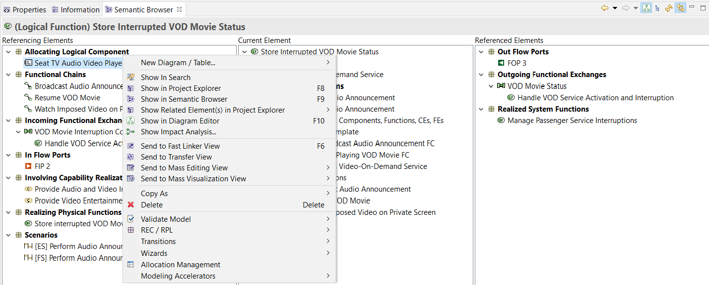

- The Semantic Browser lists all the existing relations one element has with other elements and diagrams.
- It is highly valuable to explore and understand the content of a model.
|
|
|

|
|
Control double-click (or typing F9) on an element in the Semantic Browser automatically makes it the “current element”. Typing F9 on an element on a diagram or in the Project Explorer instantaneously brings the Semantic Browser focused on this element. |
With the upper right toolbar, it is possible to navigate in the history of the Semantic Browser (Back / Next buttons).

By default, the Semantic Browser is always synchronized with the current selection in the Diagram Editor or in the Project Explorer. However, with big models, performing all the requests might introduce lag between selections and make the environment less smooth. It is possible to deactivate this synchronization (and only rely on F9 when necessary).

Show/hide diagrams
If this option is toggled, all diagrams related to the current element are displayed by the Semantic Browser (in category named “All Related Diagrams”). Disabling it is likely to improve performances since computation of all related diagrams for an element is time-consuming (especially if the Semantic Browser is synchronized). This option is enabled by default.

Show/hide Pattern Instances
If this option is toggled, all pattern instances related to the current element are displayed by the Semantic Browser (in category named “All Related Pattern Instances”). Disabling it is likely to improve performances since computation of all related pattern instances for an element is time-consuming (especially if the Semantic Browser is synchronized). This option is disabled by default.

Collapsed/Expanded Mode
By default, the Semantic Browser works in the “expanded mode” which means that tree nodes are all expanded (children are visible). If this option is toggled, the Semantic Browser switches to the “collapsed mode”. In that case, all category nodes are not expanded by default and the Semantic Browser will remember which categories have been manually expanded and keep them expanded for future display (until they are manually collapsed). This option is useful when the user want to focus on particular relationships when dealing with complex models.

Double-clicking on an element in the Semantic Browser opens the editor of this element. F8, F9, F10 keys allow selecting the current element in other Views. All other applicative commands are still available through the contextual menu.

Finally, opening a diagram from the Semantic Browser is also possible. In that case, the focus in the Diagram Editor is set on the current element.